Java Railway Roblox Corporation
Kami Siap Melayani Anda Sepenuh Hati
Pilihan Game Roblox
Akses langsung ke peta dan rute permainan Java Railways Roblox
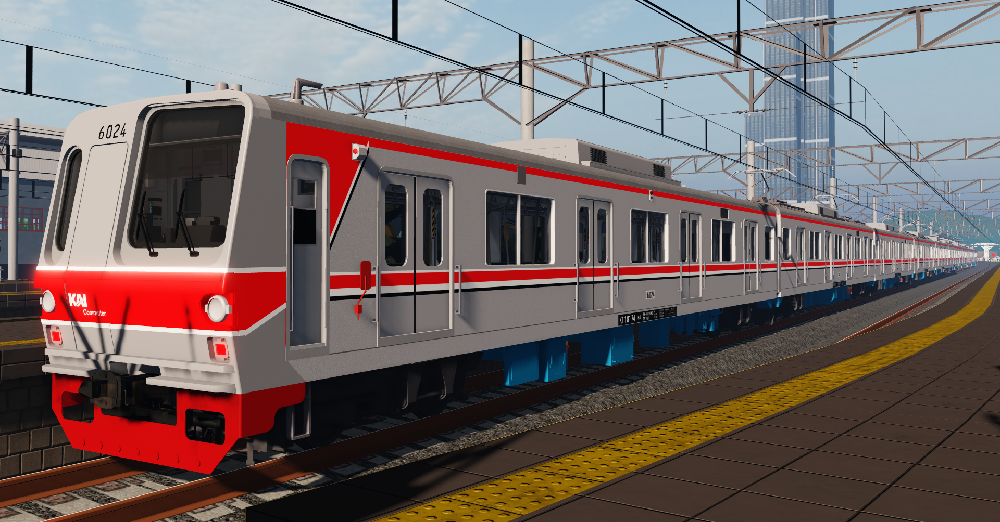
Java Railways Roblox - DOPT 5
Jelajahi peta operasional DOPT 5 dengan berbagai pilihan sarana KRL modern, sistem persinyalan realistis, dan rute perjalanan komuter yang seru.
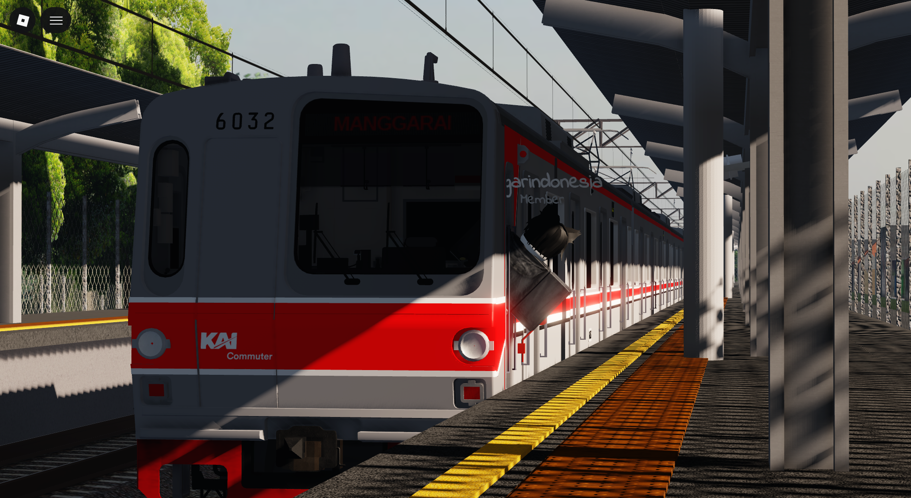
Java Railways Roblox - Freedrive
Peta operasional sekunder dengan rute ekspres khusus, jalur stabling depot, serta simulasi langsiran sarana kereta api.
Map DOPT 5 JRR
Peta rute dan jalur operasional utama Java Railways Roblox
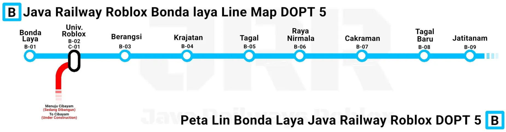
Tautan Resmi JRR
Akses komunitas dan media sosial resmi Ittoem Studio
Partner Resmi Ittoem Studio
Kolaborasi dan mitra pengembang game perkeretaapian Roblox
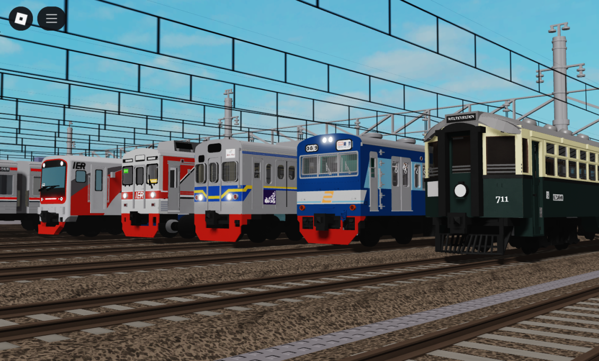
Tetsudo-no-Jatiwarna
Didirikan pada tahun 2022 untuk mengembangkan game perkeretaapian Roblox. Salah satu karyanya adalah IER (Indonesian Electric Railway) berlatar Jabodetabek 2023-2024 dengan armada komuter bekas Jepang, CRRC, dan PT INKA.
Kunjungi Partner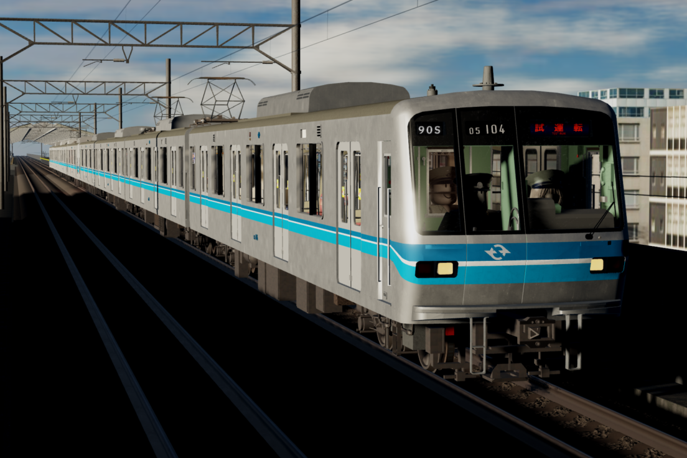
Toto Public Rapid Service
Game Kereta Rel Listrik bertemakan Jepang dengan trainset realistis. Anda dapat mengelilingi stasiun dan menjelajahi semua jaringan kereta di Jepang dengan sensasi otentik.
Kunjungi Partner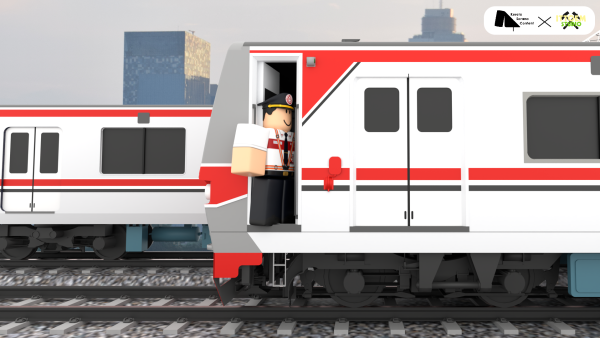
Kereta Sarana Content
Mitra penyedia seragam roleplay resmi (Masinis, Kondektur, PPKA, Teknisi, dll). KSC juga melayani pemesanan seragam kustom dengan nama dan pangkat untuk pengalaman roleplay yang lebih imersif.
Kunjungi Partner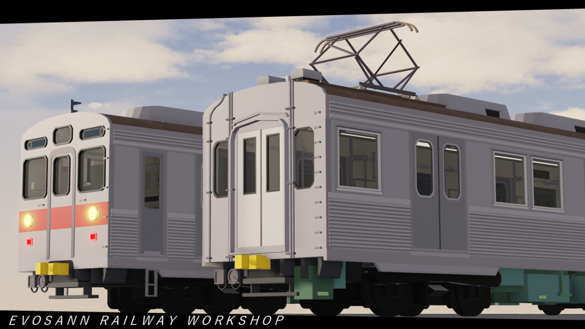
Evosan Heavy Industries
Pengembang Trains Of Indonesia, game bertema perkeretaapian Indonesia yang menghadirkan variasi armada diesel hingga elektrik serta membuka aspirasi pengembangan dari komunitas.
Kunjungi PartnerDaftar Sarana Kereta
Armada KRL dan Trainset resmi yang beroperasi di Java Railways Roblox
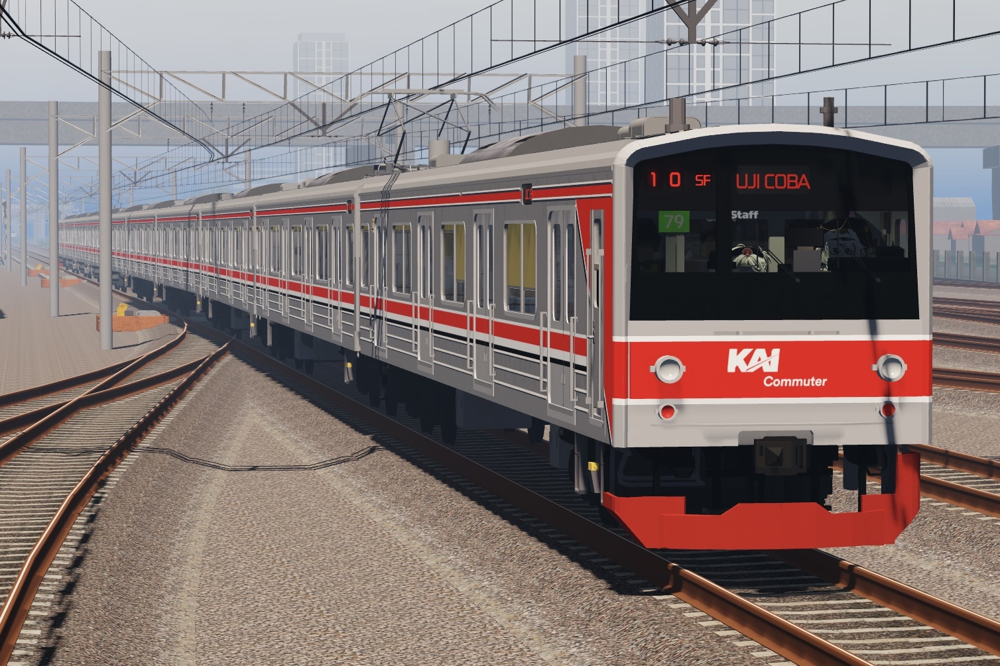
JR East SeriesJR 205 Series
Armada standar komuter dengan performa andal dan kapasitas penumpang tinggi.
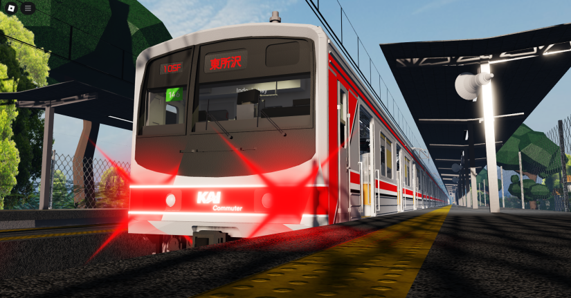
JR East SeriesJR 205 Marchen
Varian JR 205 dengan desain wajah unik khas rute Musashino Line.
Tokyo Metro 6000
Armada legendaris Chiyoda Line dengan kaca depan asimetris yang ikonik.
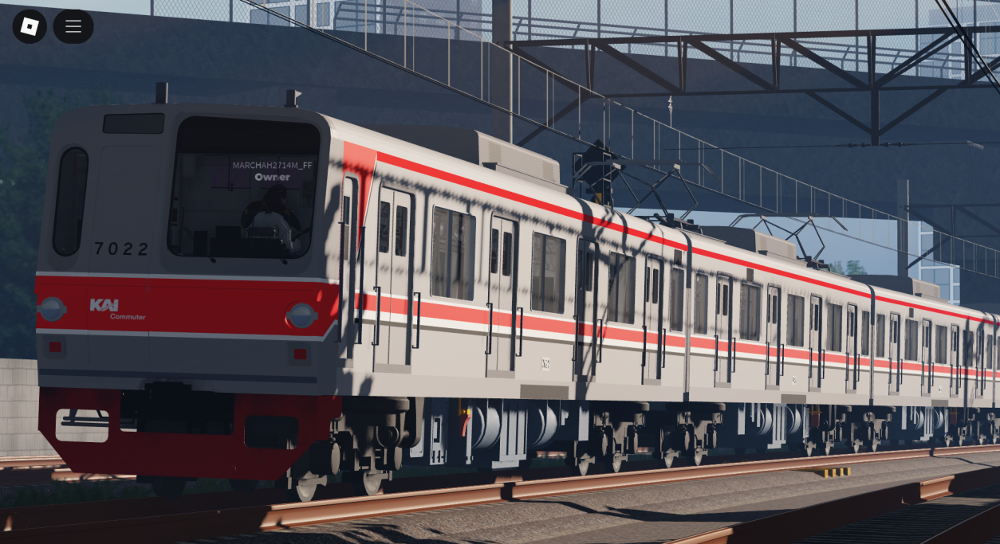
Metro SeriesTokyo Metro 7000
KRL perkotaan tangguh berdesain klasik eks jalur Yurakucho Line.
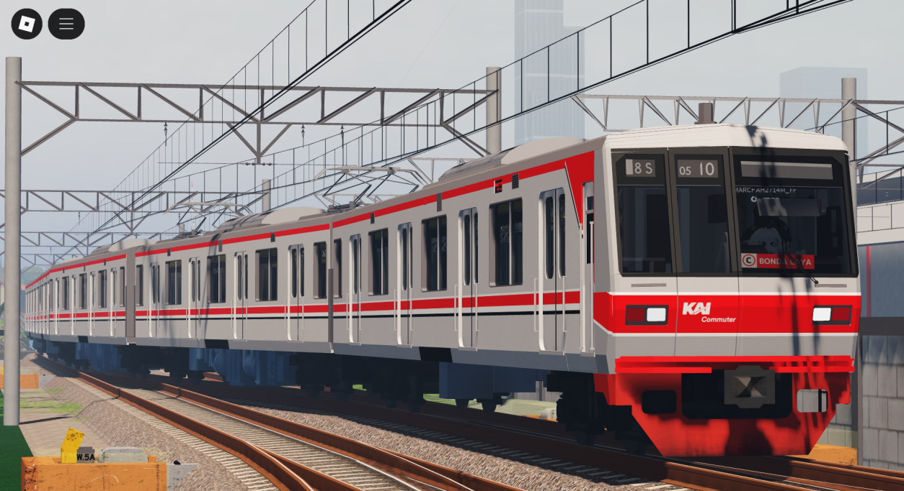
Metro SeriesTokyo Metro 05
Armada modern eks Tozai Line dengan bodi aluminium yang aerodinamis.
iE305 Series
Armada ekspres khusus dengan livery eksklusif khas Java Railways Roblox.
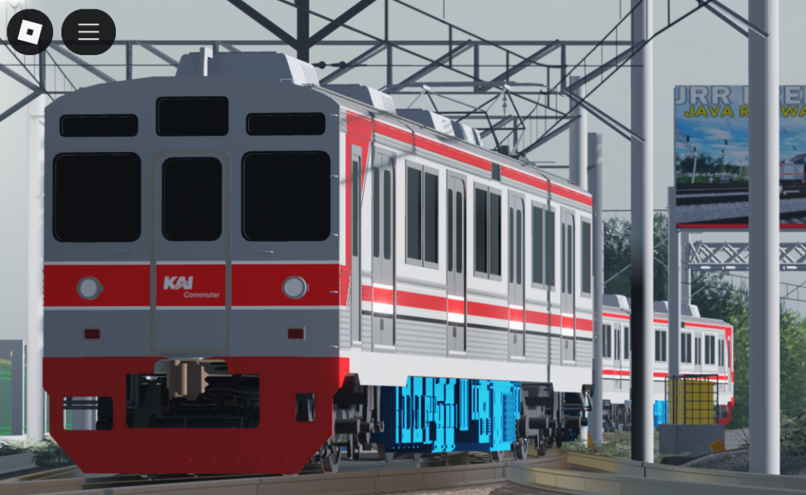
Tokyu SeriesTokyu 8500
KRL berbodi stainless steel kokoh dengan suara motor traksi yang khas.
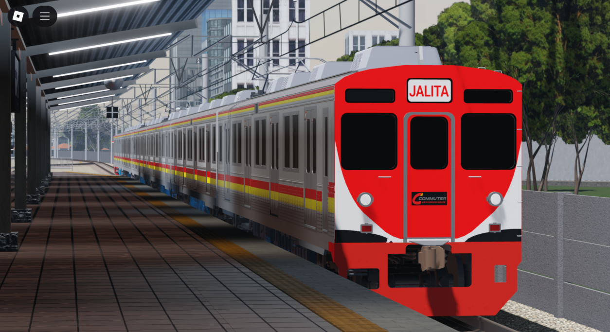
Special LiveryTokyu 8500 Jalita
Edisi khusus Tokyu 8500 dengan skema warna dan identitas khas Jalita.